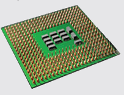
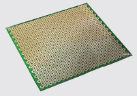

Entendendo melhor...(){
i++
Capacidade de processamento de um processador quântico
O processamento de um computador quântico é mais eficiente que o de um computador eletrônico, pois trabalha com uma quantidade mais densa de informações ao mesmo tempo. Alguns problemas que um computador eletrônico levaria milhares de anos para resolver, um computador quântico seria capaz de resolver em alguns minutos. Isso ocorre devido à diferença entre o bit eletrônico e o bit quântico.
Bit eletrônico: Usado nos computadores atuais, possui dois estados possíveis: 0 e 1.
Bit quântico (qubit): O bit quântico é mais denso, pois ao contrário do bit eletrônico tradicional que armazena 2 tipos diferentes de estados, é capaz de armazenar 3 tipos: 0, 1, e um terceiro, que é a sobreposição de um estado em outro.

Equivalência entre qubits e bits eletrônicos:
| Bit quântico (Qubit) | Bit eletrônico |
| 1 qubit | 2 bits |
| 2 qubits | 4 bits |
| 3 qubits | 8 bits = 1 byte |
| 13 qubits | 8.192 bits = 1 kilobyte |
| 23 qubits | 8.388.608 bits = 1 megabyte |
| 33 qubits | 8.589.934.592 bits = 1 gigabyte |
| 43 qubits | 8.796.093.022.208 bits = 1 terabyte |

Processador Eletrônico
Processador Eletrônico: É o processador presente no computador pessoal atual, segue os conceitos da ciência da computação tradicional, trabalhando basicamente com sinais eletrônicos. É composto por 10 a 100 milhões de pequenos transistores, organizados de modo a formar estruturas complexas de processamento. Cada transistor é capaz de trabalhar com apenas 1 bit por vez.

Processador Quântico
Processador Quântico: É o processador dos computadores quânticos. Não segue os conceitos clássicos da ciência da computação, trabalhando de um modo totalmente inédito. É composto por vários microanéis supercondutores. Cada anel funciona de modo independente um do outro, sendo capaz de processar vários qubits ao mesmo tempo.
Na Prática
A tabela abaixo compara o tempo de execução de um algoritmo de fatoração clássico com o algoritmo de fatoração de Shor, mostrando o quão eficiente o uso da computação quântica pode ser:
| Comprimento do número a ser fatorado | Algoritmo de fatoração clássico | Algoritmo de Shor (Quântico) |
| 512 bits | 4 dias | 34 segundos |
| 1024 bits | 100 mil anos | 4,5 minutos |
| 2048 bits | 100 trilhões de anos | 36 minutos |
| 4096 bits | 100 sextilhões de anos | 4,8 horas |
Referências:
Guia da Carreira
Carreira de TI
}